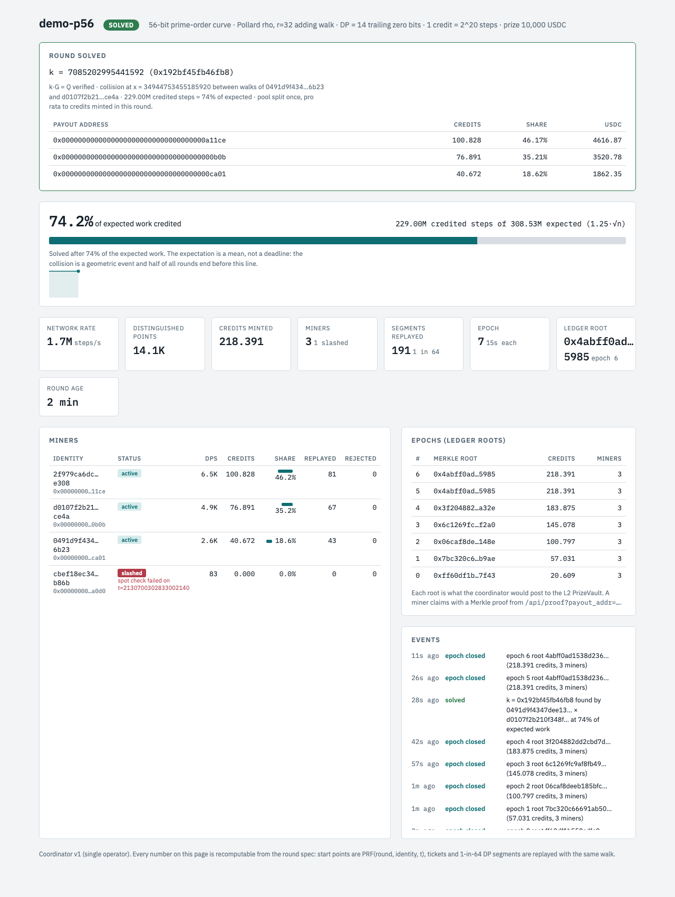

A crowd of walkers on a curve, paid the moment two of them collide.
RhoNet is a mining pool for cryptanalysis. Anyone with a GPU runs Pollard rho against a public elliptic-curve challenge, every unit of verified work mints one credit, and the prize is split once, pro rata, when the round is solved.
An external review on 8 September 2026 found four critical and six high-severity defects; we fixed them and then had the repair itself reviewed adversarially. That second pass reproduced two new critical failures: an epoch's payout root is built before that epoch is audited, so a miner slashed for forgery still holds a valid proof against the published root, and anyone watching the chain can copy the operator's solution out of the mempool and cancel settlement with it. Both are being fixed. Until they are, this is a demonstrator and nothing here should hold money. Every finding, its reproduction and its fix is in the open: review/2026-09-08-external-review.md.
Why this is hard to organize
The trust cliff
Whoever coordinates sees the collision first and holds the key. Volunteers have no reason to believe they will be paid, so the prize has to be locked before the first step.
Cheating is free
A distinguished point is a few dozen bytes. Forging one costs nothing unless someone replays the walk that produced it, and the replay has to be unpredictable or a forger simply avoids it.
Paid only at the end
A round can run for months. Whoever leaves early needs a claim on the prize that survives their departure, or the crowd thins exactly when it is needed.
How it works
One unit of work, one credit
A distinguished point with w trailing zero bits stands for 2w expected steps. One credit is 230 verified steps. No block reward, no halving, no treasury, no vote.
Nobody issues seeds
A walker starts at PRF(round, pubkey, t). Anyone can recompute any walk from public data, so the coordinator issues no work and an auditor can re-verify any walk offline.
Admission is the same kernel
A ticket is a walk until x has d trailing zero bits. Seconds on a weak device, replayed once, and no edge for botnets or ASICs over an honest GPU.
Replay, not proof
A sample of submitted segments is walked again and one failure slashes the identity. Sampling is the right verifier here: proving every step in zero knowledge costs orders of magnitude more than the work being proved.
Pull-based settlement
Each epoch the coordinator posts one Merkle root of (address, credited steps) to a vault on an Ethereum L2. After the solve, every miner sends one claim(steps, proof).
Abort is a condition, not a decision
An external solve, a deadline, or coordinator silence must be provable on chain and callable by anyone, so a stalled round returns each sponsor their own deposit rather than resting on the operator's good behaviour.
The MVP, end to end
Everything above runs today in Python on toy curves. A 56-bit round on one laptop: three honest miners with 3, 2 and 1 processes, one cheater submitting real-looking points with invented coefficients, and one that filters its work identifiers to dodge the audit. Both are slashed by the post-commitment audit; all three honest miners are paid pro rata.
| Miners | 3 honest, paid 47.8% / 35.4% / 16.8%, matching their process counts |
|---|---|
| Adversaries | both slashed by the epoch audit, credits zeroed, keys blocked |
| Solution | k verified against the generator's secret on every run |
| Ledger | epoch roots with published beacon commitments and reveals; Merkle proofs verify in Python and inside the Solidity vault |
| Tests | 13 Python files and 35 Foundry tests, including a 256-run conservation fuzz |

The coordinator dashboard after the round above.
What one run proves, and what it does not
A single solve says almost nothing here. Pollard rho's completion count has a standard deviation near half its mean, so a round finishing at 40% or at 200% of expectation is ordinary. We replaced the anecdote with a calibration: 300 independent solves at each of four sizes, each one checked against the generator's secret.
| Bits | Solves | Mean, in units of √n | 3σ interval of the mean | 10th to 90th percentile |
|---|---|---|---|---|
| 28 | 300 | 1.186 | 1.084 – 1.287 | 0.50 – 2.00 |
| 32 | 300 | 1.227 | 1.114 – 1.339 | 0.50 – 2.09 |
| 36 | 300 | 1.241 | 1.122 – 1.360 | 0.51 – 2.10 |
| 40 | 300 | 1.182 | 1.077 – 1.287 | 0.49 – 2.02 |
The theoretical constant for an r-adding walk without the negation map is 1.25. Fitting step count against group size across the four sizes gives an exponent of 0.5000 with R² = 0.9998, which is the property that matters: cost is square-root in the group order, with the constant where theory puts it. Before the branch function was decorrelated from the distinguished-point predicate, every distinguished point took the same branch out of 128, a defect that would have surfaced only as a slightly wrong exponent.
python3 -m venv .venv && .venv/bin/pip install fastapi 'uvicorn[standard]' cryptography httpx ./demo.sh # 56-bit round, coordinator, 3 honest miners + 1 cheater open http://127.0.0.1:8642 # dashboard
The ladder
| Target | Expected steps | Prize | 1,000 RTX 5090 | Status |
|---|---|---|---|---|
| Certicom ECCp-109 | 3.2e16 | solved 2002 by 10,308 volunteers | ~13 min | calibration rerun |
| Certicom ECCp-131 | 6.5e19 | $20,000, open since 1997 | ~19 days | first public round |
| Bitcoin puzzle #140 | 1.7e21 | 14 BTC, bearer | ~480 days | kangaroo, not implemented |
| Certicom ECCp-163 | 4.3e24 | $30,000 | ~3,400 years | out of reach |
The Certicom rungs share one walk, one ticket, one credit and one vault. The Bitcoin puzzles do not: a bounded interval calls for Pollard kangaroo with tame and wild herds, a different start construction and a different collision equation, and no kangaroo mode exists in this code. Expected steps are 1.25·√n for the rho rows and 2·√(interval) for the kangaroo row. Rates for 1,000 GPUs assume 4·1010 steps per second per card, extrapolated from published 256-bit kangaroo throughput and not yet measured on a 131-bit field. Solving 131 bits says nothing about P-256; the gap is 262.
Roadmap
- Pre-mine 60–80 bit rounds on the MVP to shake out the protocol.now
- GPU kernel for the 131-bit field with negation map and look-ahead. Gate: measured throughput on real hardware.
- ECCp-109 rerun, closed then open, to calibrate quotas, replay rate and epoch length.
- ECCp-131 with a USDC pool in the vault plus the Certicom prize claimed by a legal entity and distributed through the same root.
- v2 coordinator: staked committee, each member running its own intake bucket.
- A bearer-asset round, such as a Bitcoin puzzle, only with a kangaroo implementation and only when the collision can be resolved without any single party learning k first. Puzzle #135 was taken by a single solver on 28 July 2026, which is exactly the risk this rung has to answer.